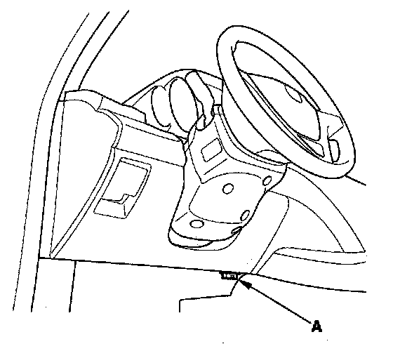

ODS Unit Initialization
ODS Unit InitializationWhen a seat-back cover, seat-back cushion, and/or ODS unit is replaced, initialize the ODS by following the procedure.
NOTE: A new (uninitialized) ODS unit installed with a faulty OPDS sensor can cause DTC 85-71.
1. Erase the DTC memory.
2. Make sure the front passenger's seat is dry. Set the seat-back in a normal position, and make sure there is nothing on the seat.
3. Make sure the ignition switch is OFF and the MES connector is not shorted.

4. Connect the HDS to the DLC (A).
5. Turn the ignition switch ON (II).
6. Make sure the HDS communicates with the vehicle and the SRS unit. If it does not, troubleshoot the DLC circuit.
7. From the HDS Main Menu, select SRS, then SRS, then Calibration. In the Calibration Menu, select ODS INITIALIZATION. Follow the screen prompts to initialize the ODS.
8. Turn the ignition switch OFF.
9. Disconnect the HDS from the DLC.
NOTE: If the ODS system fails to initialize after several attempts, replace the OPDS sensor/seat-back and retry. If the ODS system continues to fail to initialize, replace the ODS unit.